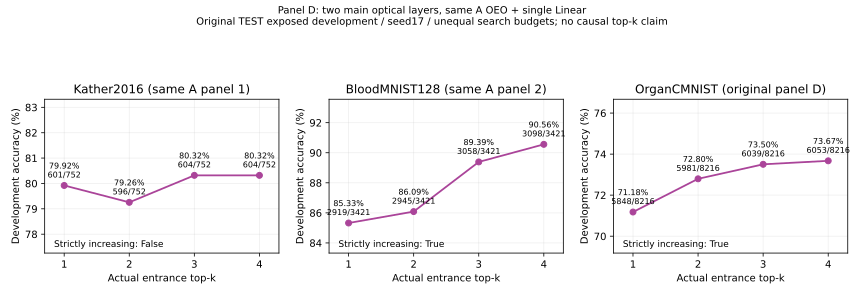

ORIGINAL_TEST_EXPOSED_DEVELOPMENT，seed17。原TEST用于选模和训练开发，不是独立TEST。12点中Kather/Blood的k2直接复用A同PT；其余10点单独保留，不为制造递增选择弱权重。
统一A的[R,G;B,0]、router224、四224专家+gap30拼478/global478/canvas518、两主层E→OEO→G→OEO、同intensity_softsign无LN/ReLU、唯一无偏置Linear784→C。Kather和Blood保持A原数据/划分/去重；Organ保留原官方三划分和11类。
| 数据 | k | 状态 | 获选TRAIN | VAL（仅记录） | 已核验开发TEST | 中途TEST选模值 |
|---|---|---|---|---|---|---|
| kather2016 | 1 | complete | 85.35% | 74.60% | 79.92% | 78.46% |
| kather2016 | 2 | A/D shared Top2 PT | 87.27% | 76.06% | 79.26% | 78.46% |
| kather2016 | 3 | complete | 89.02% | 78.72% | 80.32% | 79.65% |
| kather2016 | 4 | complete | 88.90% | 79.39% | 80.32% | 79.92% |
| bloodmnist128 | 1 | complete | 87.04% | 85.86% | 85.33% | 84.98% |
| bloodmnist128 | 2 | A/D shared Top2 PT | 88.31% | 86.10% | 86.09% | 86.06% |
| bloodmnist128 | 3 | complete | 91.20% | 89.31% | 89.39% | 89.36% |
| bloodmnist128 | 4 | complete | 92.30% | 90.01% | 90.56% | 90.12% |
| organcmnist | 1 | complete | 81.00% | 85.41% | 71.18% | 70.56% |
| organcmnist | 2 | complete | 81.16% | 86.20% | 72.80% | 71.24% |
| organcmnist | 3 | complete | 81.57% | 86.87% | 73.50% | 72.81% |
| organcmnist | 4 | complete | 81.89% | 87.25% | 73.67% | 73.13% |
只按TEST开发准确率再CE选PT，VAL不设门槛。最后一列是中途状态，不是完成结果。递增目标：{'kather2016': {'nondecreasing': False, 'strictly_increasing': False}, 'bloodmnist128': {'nondecreasing': True, 'strictly_increasing': True}, 'organcmnist': {'nondecreasing': True, 'strictly_increasing': True}}。

显示真实正确数及是否严格递增，不画单seed不存在的误差条。训练/头拟合预算不同，不能仅凭曲线宣称k的因果结构优势。